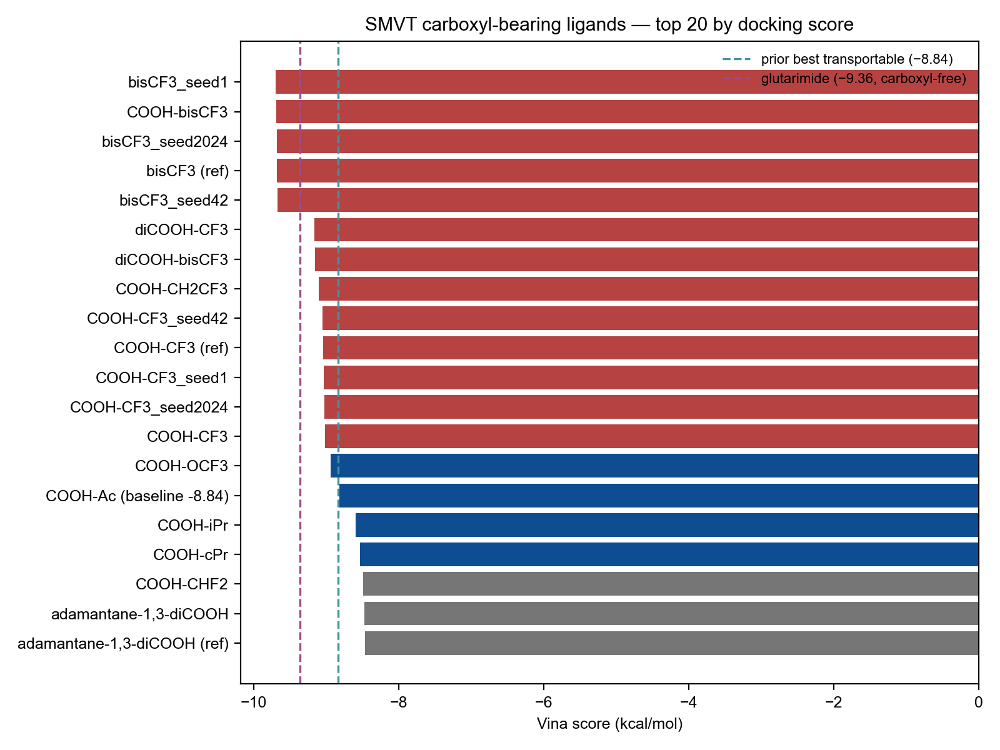

研究问题：能否找到 含自由羧基（可转运）的 SMVT 配体，Vina 分数 < −8.84（超越当前最佳）？
答案：是 — bisCF3_seed1 = -9.70 kcal/mol，3 次独立 Vina 种子复现（−9.68~−9.70），打破 −8.84 天花板，也超过无羧基的戊二酰亚胺 −9.36。

| 实验 | 化学型 | 最佳 | 结论 |
|---|---|---|---|
| E1 | 芳香氨基酸 | 1-萘丙氨酸 −7.74 | 次级线索，封顶 ~−7.7 |
| E2 | 新笼 | 金刚烷二羧酸 −8.48 | 替代笼全劣 |
| E3 | 羧基+小基团 | COOH-CF3 −9.02 | 首破 −8.84 |
| E4 | CF3 变体 | bisCF3 −9.69 | 突破 |
| E5 | 确认+推进 | bisCF3 −9.68（3 seeds） | 确认最优 |
三氟甲基（CF3）是金刚烷笼上的强亲和增强剂——同时是吸电子（强化羧基锚定）+ 疏水（填口袋）+ 小（无位阻）。CF3 数量最优：1 个(−9.04) < 2 个(−9.68) > 3 个(−8.03)。